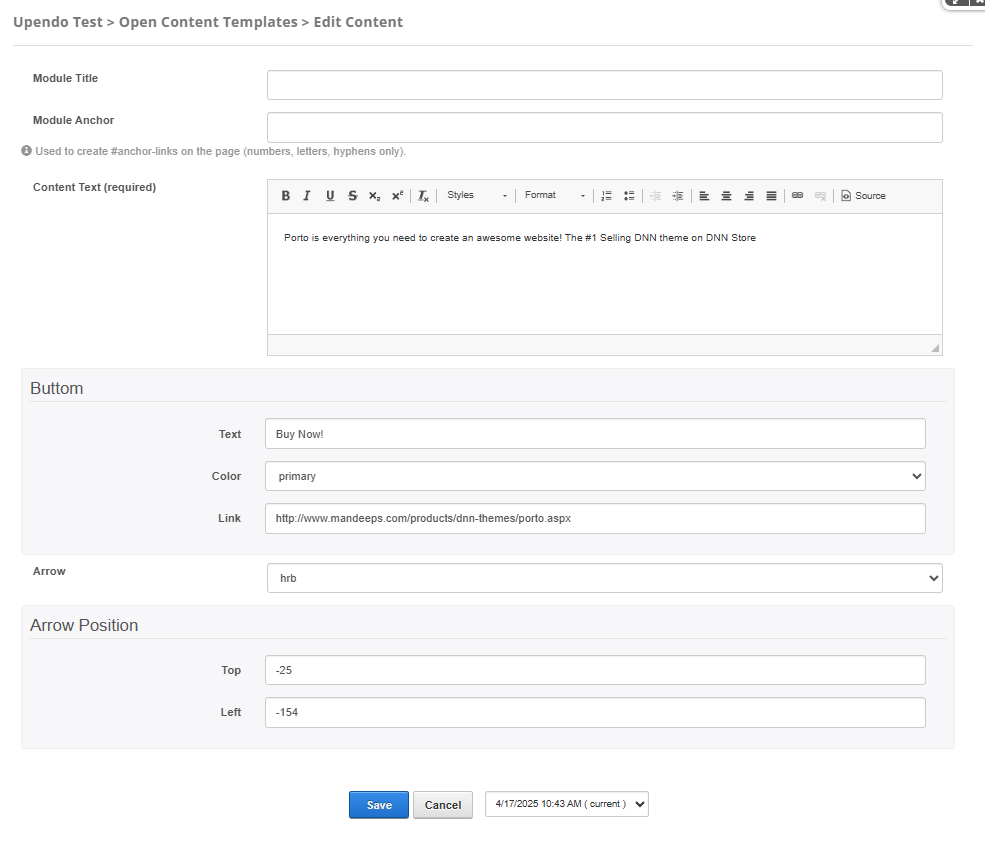
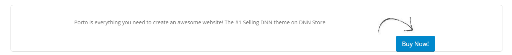

Porto-Arrows Documentation
Table of Contents
Overview
The Porto-Arrows component allows you to incorporate customizable arrows into your design, enhancing navigation and user interaction. With various styles, sizes, and positioning options, you can tailor the arrows to fit your interface's needs.
Porto defines the appearance and behavior, but its implementation is managed via OpenContent for greater flexibility.
For more details, check out the Porto-Arrows repository on GitHub or the Porto documentation.
Usage Example
Edit
Properties
| Property | Data Type | Description |
|---|---|---|
| Module Title | String | Used to define the title of the module. This title is displayed in the DNN administration interface to help identify the module. |
| Module Anchor | String | Used to create anchor links on the page. This allows users to link directly to the module using a unique identifier. Only letters, numbers, and hyphens are allowed. |
| Content Text | Html (CK Editor) | Allows you to set the content that accompanies the arrow and button. |
| Button | ||
| Text | Text | Allows you to set the text displayed on the button. |
| Color | Dropdown list (select) | Allows you to select the button color.
|
| Link | Text | Allows you to set a link to which the user will navigate when the button is pressed. |
| Arrow | Dropdown list (select) | Allows you to select the arrow direction. |
| Arrow Position | ||
| Top | Text | Allows you to set the top position of the arrow. |
| Left | Text | Allows you to set the left position of the arrow. |
Views
Notes
Note: The Porto-Arrows component allows you to add customizable arrows and
buttons to enhance navigation and user interaction.
Ensure the following properties are configured correctly:
Content Text: Defines the content that accompanies the arrow and button (required).- Button:
Text: Sets the text displayed on the button.Color: Selects the button color from a dropdown list.Link: Specifies the URL the button navigates to when clicked.
Arrow: Selects the arrow direction (e.g., left, right, up, down).- Arrow Position:
Top: Sets the top position of the arrow.Left: Sets the left position of the arrow.